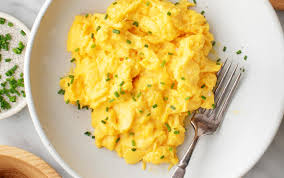

Scrambled Eggs

Description
Scrambled eggs are a classic breakfast staple made by gently cooking beaten eggs in a pan with butter or oil,
resulting in soft, fluffy curds.
The dish is quick, easy, and can be customized with milk, cheese, herbs, or vegetables for added flavor and texture.
Ingredients
- Eggs
- Milk or Cream
- Butter
- Salt and Pepper
Steps
- Crack the eggs into a bowl.
Add milk or cream if using, and season with salt and pepper.
Whisk well until the yolks and whites are fully combined and slightly frothy.
- Heat a non-stick skillet over medium-low heat and melt the butter.
- Pour in the eggs and let sit for a few seconds.
Gently stir with a spatula, pushing the eggs from the edges toward the center.
Continue stirring occasionally until eggs are just set but still soft and glossy.
- Remove from heat immediately to prevent overcooking.
- Serve warm, optionally garnished with herbs, cheese, or other toppings.